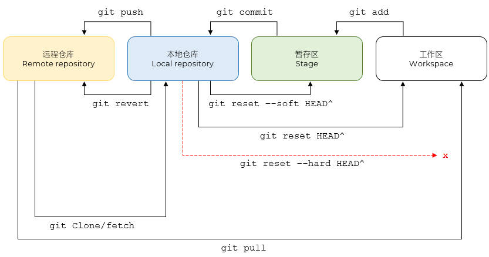
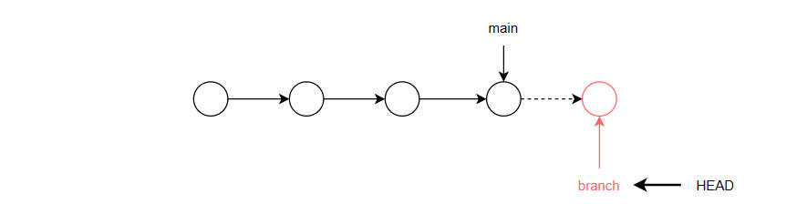
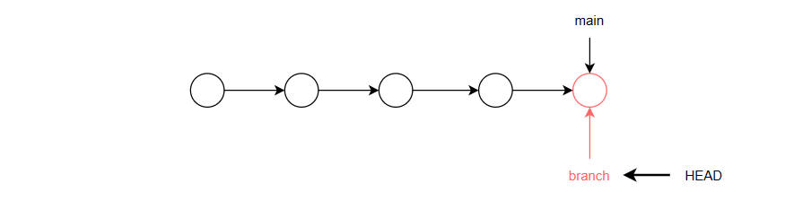

- 概述 Overview
- 代码仓库管理工具
- 分布式版本控制系统
- 如果没有仓库，请先创建仓库：Github 或 Gitee
- 下载和安装 Download & Installment
- 打开 Git 官网 https://git-scm.com/，选择对应的操作系统和版本，点击下载并安装
- 选择 vs code 为默认编辑器
- 使用 main 覆盖 默认分支
- 查看版本 View
- 右键点击桌面空白处，选择 Git Bash Here，打开终端窗口，输入以下命令
- Git Bash 就是一个迷你型的 Linux 系统哦
$ git -v
$ git --version
配置 Config
- 配置级别
系统级别的配置：--system
全局级别的配置：--global；建议
项目本地的配置：--local；默认
- 基本配置
- 用户名和邮箱
- 使用户名和邮箱将 Git 和用户[自己的代码仓库，如 Github ]关联起来
- 用户名和邮箱仅仅作为签名，以区分提交的用户，和仓库账号没有关系；无论你使用GitHub 仓库、Gitee 仓库，还是任何其他 Git 服务提供商的仓库
仅用于提交记录，不涉及登录或权限
没有关联，无法提交 commit
$ git config --global user.email 1942194789@qq.com
$ git config --global user.name glpla
- 其它配置
- 不带参数就是查看；带参数就是配置
# 查看所有配置
$ git config --list
# 查看用户名
$ git config user.name
cnplaman
# 查看邮件
$ git config user.email
1942194789@qq.com
# 查看缓冲区大小
git config http.postBuffer
# 配置缓冲区大小
git config http.postBuffer 524288000
# 配置默认分支名：历史原因，默认分支名为 master，多与奴隶 slave 配对使用，涉嫌歧视
git config --global init.defaultBranch <name>
# 现多更改为 main dev等
git config --global init.defaultBranch main
- 查看命令
#查看所有命令
$ git -h
# 查看特定命令，如 remote
$ git remote -h
工作流 Workflow

Git 工作流
- 工作区 workspace
- 存放项目文件的地方，通常就是你的项目工作目录
- 暂存区 stage
- 临时存放文件便于调整
- 使用 add 可以将文件从工作区放到暂存区
不包括被忽略的文件
单个文件体积大小不要超过 50MB
# 点 . 表示所有文件
$ git add .
# 也可以指定具体文件
$ git add <filename>
- 撤销提交
情况1：只想取消暂存，但保留文件修改（最常用） 将文件从暂存区移回工作区，修改内容不变
# 取消指定文件的暂存
git restore --staged <filename>
# 或者使用旧版命令（依然有效）
git reset HEAD <filename>
# 取消所有文件的暂存
git restore --staged .
情况2：不仅取消暂存，还要丢弃修改；将文件恢复到上一次 commit 的状态，未保存的修改会丢失
git restore <filename>
# 或者
git checkout -- <filename>
- 本地仓库区 local repository
- 版本区，真正的管理
- 文件只有放到了版本区才可以进行真正意义上的管理
- 使用 commit 可以将文件从暂存区放到本地仓库区/版本区
- 提交时，请使用 -m 说明本次提交的基本情况； m 表示 message
- 每次提交都有一个 commitId 记录；根据这个记录，可以实现更多操作，如查看、撤销
$ git commit -m ""
- 撤销提交
情况1：保留代码，保留暂存；不需要重新 add
# 撤销最近1次
git reset --soft HEAD^
# 撤销2次
git reset --soft HEAD~2
情况2：保留代码，取消暂存；需要重新 add
git reset HEAD~2
情况3：删除代码；谨慎使用
git reset --hard HEAD^
- 远程仓库区 remote repository
- 线上仓库，如GitHub、Gitee
- 使用 push 将本地分支的提交推送到远程仓库对应的分支
指定推送的仓库或仓库别名，如 origin
指定推送到哪个分支或默认分支，如 main
$ git push <name> <branch_name>
- 将本地的 branch_name 分支推送到远程仓库 name 的 branch_name 分支；不会设置任何追踪关系
- 后续如果要推送或拉取这个分支，仍然需要明确指定远程仓库和分支名称
- 使用 --all 表示推送所有分支
$ git push <name> -all
- 如果前期配置已经指定了别名和默认分支，后续推送只需要使用 git push 即可
$ git push
- 如果没有配置，使用 -u/--set-upstream 设置一个追踪关系 upstream relationship / 自动关联
$ git push -u <name> <branch_name>
- 安全撤销：不会删除历史，而是生成一个新的提交来抵消之前的修改
git revert CommitID
- 覆盖撤销：先在本地用 git reset (如场景2) 回退到指定版本，然后强制推送到远程；谨慎使用；通常用于个人分支或紧急情况
git reset
git push -f
常见命令 Command
- 初始化仓库 init
- 为当前工作目录生成一个隐藏文件夹 .git，里面是 Git 配置信息
- 初始化后，该目录将被 Git 托管，可以追踪代码的任何变化
- 如果生成的 .git 被删除，有关的托管信息将丢失
- 具体的配置文件 .gitconfig 位于系统盘用户目录下：C:\Users\cnplaman
- 文件内容就是 Git 配置的用户邮箱等基本信息
- 默认初始化并创建 master 分支
$ git init
- 初始化并创建 main 分支 - 推荐
$ git init -b main
- 创建忽略文件 .gitignore
- .gitignore 文件用于指定 Git 应该忽略的文件和目录，以避免将不需要的文件提交到版本控制系统中
- 常见有：包依赖、测试文件等
- .gitignore 只对未被跟踪的文件生效
- 如果文件被追踪过，即使后续指定了忽略，仍然会被追踪
- 可以删除、提交后再重新添加；也可以取消追踪后再提交；文件名有空格应使用引号
git rm --cached demo.html
git rm --cached 'demo copy.html'
- 查看文件状态 status
$ git status
Git文件状态
| item |
desc |
| untracked |
未记录的；VS code 中使用标记 U |
| modified |
修改过的；VS code 中使用标记 M |
| staged |
已暂存的 |
| committed |
已提交的 |
- 查看本地提交 commit history
- 显示当前分支（或指定分支/引用）上的提交记录，按时间倒序排列
- -n：可以指定查看的记录条数
- --oneline：将每条记录压缩成一行查看
- 按 Q/q 退出
- Author 就是配置中关联的用户名和用户邮箱
- git log 显示的是完整的 commit ID；一个 40 位的十六进制字符串
$ git log
commit e0ac96e55219d89fc3edec31aa9998d9184dcff7 (HEAD -> main, origin/main)
Author: glpla <glpla@hotmail.com>
Date: Thu Jan 29 15:47:19 2026 +0800
spm removed large file
commit b4ae9a83cd1d1a43d5b1dc7357d850abee7d19ad
Author: glpla <glpla@hotmail.com>
Date: Thu Jan 22 15:56:25 2026 +0800
react
...
- git log --oneline 显示的是缩写的 commit ID（默认 7 位）
$ git log --oneline -n 5
e0ac96e (HEAD -> main, origin/main) spm removed large file
b4ae9a8 react
1012e0f course page index
2a280c1 final
8805a15 final
$ git log --oneline
- 撤销本地提交 reset
- 主要用于移动 HEAD 指针、重置暂存区（index）和/或工作区，从而撤销提交、取消暂存或丢弃更改
- 不要对已推送 pushed 的提交使用 git reset
git reset
| item |
desc |
| git reset --soft |
撤销提交，保留暂存；安全 |
| git reset --mixed |
撤销提交，取消暂存；安全；默认 |
| git reset --hard |
彻底回退；危险 |
仓库 Repository
- 克隆仓库 clone
- 将远程仓库复制到本地
- 通常是第一次使用别人的仓库；后续直接拉取 pull 就可以和仓库保持一致
$ git clone url
- 克隆指定分支到指定目录；如果不指定目录，则使用项目的默认目录
git clone -b <branch> url <dir>
- 拉取仓库 pull
- 在第一次克隆 clone 的基础上，通过拉取和原来仓库保持一致
- 如果之前提交使用 -u 设置了追踪，可以直接拉取
$ git pull <name> <branch>
$ git pull
- 仓库管理 remote
- git remote 命令用于管理和查看 Git 仓库中的远程仓库配置。它有多种用法，具体取决于你提供的参数
1. 查看关联的远程仓库 remote
git remote
origin
- 使用 -v 参数查看关联仓库的详细信息
git remote -v
origin https://github.com/glpla/glpla.github.io.git (fetch)
origin https://github.com/glpla/glpla.github.io.git (push)
2. 添加远程仓库 add
- 使用 add 添加/关联远程仓库并指定一个 别名 - 因为仓库 url 太长
- 可以关联多个远程仓库，使用别名区分
$ git remote add <name> <url>
- 分别为 Github 和 Gitee 指定别名
$ git remote add origin https://github.com/glpla/glpla.github.io.git
$ git remote add gitee https://gitee.com/cnplaman_admin/case1-helloworld.git
3. 删除远程仓库 remove
$ git remote remove <name>
$ git remote rm <name>
4. 重命名远程仓库 rename
将默认的 origin 改为其它名字；通常不建议
$ git remote rename <old-name> <new-name>
5. 修改远程仓库 set-url
$ git remote set-url <name> <new-url>
分支 Branch
Git 基本协作流程详解
- Clone the repository
- Create a new branch from main or another branch
- Make your changes
- Push the branch to the remote repo
- Open a Pull Request (PR) / Merge Request (MR)
- Merge the changes
- Pull the merged changes into your local main branch
- Repeat from step 2
- 说明
- 通过分支实现项目的分工协作
- 各分支的操作并不影响主分支；且分支的进度通常要领先于主分支
- 当分支合并到主分支后，主分支的整个时间线才往前推进，各分支进度才保持一致
- 默认分支如 main 总是指向最新的提交；而 HEAD 指向当前的活动分支；如果没有分支，就指向主分支 main
- 只有提交 commit 过1次后才能查看分支
无分支时，HEAD指向主分支

分支单独工作，HEAD指向活动分支

分支合并到主分支
- 查看分支
- 当前分支以 * 号表示，且颜色为绿色
- 只有被追踪的分支才显示 - 提交过
- 不带参数：查看本地分支
$ git branch
dev
* master
- 查看所有本地和远程跟踪的分支 all
$ git branch -a
dev
* master
- 查看分支最近一次提交信息
$ git branch -v
dev 29aee33 1st commit
* master 29aee33 1st commit
- 查看远程分支 remote
$ git branch -r
- 创建分支
- 创建的分支自动拥有/继承当前分支的内容
- 相对于开启了一个备份
- 隔离你的开发工作，不影响主干代码
- 完成分支开发后，再并入主分支
- 特别适合团队协作
1. 单独创建分支
$ git branch branch_name
2. 创建仓库的同时创建分支
$ git init -b branch_name
3. 创建并切换分支
$ git checkout -b branch_name
4. 从指定分支创建新分支
- 切换分支 checkout
1. 指定要切换的分支名，切换到该分支，HEAD 指向该分支最新提交
$ git checkout branch_name
2. 撤销工作区的修改
- 修改了文件，但是没有 add 到暂存区，使用该命令可以撤销对文件的修改
- 清除追踪到的编辑状态
- 相当于在编辑环境中使用了 CTRL + Z 操作
$ git checkout -- <file>
示例
- 编辑文件
- 查看状态，有编辑
modified: hello.txt
- 撤销文件的编辑
$ git checkout -- hello.txt
- 查看状态，无编辑，还原工作树
nothing to commit, working tree clean
3. 撤销暂存区的文件
- 用暂存区（或 HEAD）中的版本覆盖工作区的文件；未暂存的修改将永久丢失
- 修改了文件，已经 add 到暂存区
- 使用该命令，可以拉取暂存区的文件到工作区，覆盖工作区当前文件
示例
- 编辑文件
- 提交到暂存区
$ git add .
- 重新编辑文件，不提交
- 撤销暂存区的提交
$ git checkout head -- hello.txt
- 检查：当前修改的文件被替换为暂存区的文件
4. 切换暂存区
- 指定提交 commitID 来切换/查看暂存区
- 切换后，工作区和暂存区保持一致
切换前
切换后
- 注意命令提示符从之前的分支名变成了提交ID名 - detached HEAD 分离头指针状态
huawei@LAPTOP-E61J88MK MINGW64 /d/demo ((19d99b4...))
- HEAD 指针直接指向某个提交，而不是某个分支的引用
- 如果你在这种状态做修改并提交
- 新提交会被创建，但它不属于任何分支
- 更糟的是：如果你切回原分支（比如 main），这些修改将无法被追溯，除非你记住那个 commit ID
- 它是一个孤儿提交 orphan commit，除非你主动创建分支或合并回去，否则很容易丢失
- 需要显示的切换回某个分支再继续后续操作
huawei@LAPTOP-E61J88MK MINGW64 /d/demo (main)
- 合并分支 merge
- 通常在主分支合并其它分支
- 将其它分支合并到主分支；主分支会前进一次 forwards
- 原有分支仍然存在
$ git merge branch_name
Updating 29aee33..c9f8938
Fast-forward
demo.txt | 0
1 file changed, 0 insertions(+), 0 deletions(-)
create mode 100644 demo.txt
- 删除分支
- 指定删除的分支名
- 只能在当前分支删除其它分支
- -d：合并过才允许删除
- -D：强制删除，无论是否合并过
$ git branch -d branch_name
- 删除远程分支
$ git push <name> -d <branch_name>
- 重命名分支
- -m：如果有同名分支，则拒绝 - 建议
- -M：强制命名，如果有同名分支，会被覆盖
$ git branch -m branch_name_old branch_name_new
- 将当前分支强制命名为main
$ git branch -M main
冲突
.主分支提交前进的同时，某一分支也提交。当主分支合并分支时，就会出现冲突
.尽量避免同时操作同一个文件
.主分支面向生成环境，应只做阶段性的合并
.日常工作应使用开发分支和团队分支、个人分支：个人分支合并到团队分支；团队分支合并到开发分支
标签 Tag
- Overview
版本控制
不能重复
- 查看标签
$ git tag
查看详细信息
$ git show <tag_name>
- 打标签
$ git tag <tag_name>
1. 给 HEAD 指向的提交打个标签
未打标签前查看
$ git log --oneline
90a2220 (HEAD -> master, origin/t0, origin/master, origin/HEAD, origin/20231002, t1) branch 20231002
b638f0b modify readme
e318093 init
打标签
$ git tag v1.0
打完标签查看
$ git log --oneline
90a2220 (HEAD -> master, tag: v1.0, origin/t0, origin/master, origin/HEAD, origin/20231002, t1) branch 20231002
b638f0b modify readme
e318093 init
2. 为指定 commitId 打 标签
$ git tag v1.0 commitId
- 推送标签
$ git push <name> <tag_name>
推送所有标签
$ git push <name> --tags
- 删除标签
删除本地标签
$ git tag -d <tag_name>
删除远程标签 - 同分支，利用推送的方式删除
$ git push <name> -d <tag_name>
Other
- 复刻 Fork
- fork 是 GitHub 上的一个功能，用于复制一个仓库，从而创建一个同样的仓库 - identical
- fork 的仓库与原仓库是各自独立的 - independent
- 修改后，通过 PR - Pull Request，去覆盖或更新原来仓库；当然需要确认，这就是开源共享
- 复刻出来的仓库不包括标签，其它都是一样的
- 复刻出来的内容经过修改后，可能和原来的仓库大相径庭，所以叫分叉
- Git Bash
- Git Bash就是一个微型 Linux 系统
- 支持常见的 Linux 命令
常见 Git 命令
| item |
desc |
| touch |
创建文件 |
| cat |
查看文件 |
| vim |
文本编辑查看 |
| i |
前字符前插入 |
| o |
当前行下方新开一行并进入插入模式；最常用的追加方式 |
| O |
当前行上方新开一行并进入插入模式 |
| ESC |
退出插入模式 |
| :wq |
保存退出 |
| :q! |
不保存退出 |
Homework
新项目第一次推送 - 请使用自己的仓库地址 url
- 进阶版：一次性执行所有命令；使用 && 分隔命令并使用 \ 换行；加入了仓库配置；没有更改分支名
git config --global user.name "xxx" && \
git config --global user.email "yyy" && \
git init && \
git add . && \
git commit -m "first commit" && \
git remote add origin url && \
git push -u origin master
- 专业版：使用 shell 脚本
修改 GitHub 仓库名 → 更改 git 仓库地址 → 查看并确认
HHTPS
git remote set-url origin https://github.com/用户名/新仓库名.git
SSH
git remote set-url origin git@github.com:用户名/新仓库名.git
查看并确认
git remote -v
分支操作
- 创建新文件夹 Demo 作为工作目录
- 初始化工作目录
- 查看分支
- 创建测试文件 test.txt 并 add、commit 提交到本地仓库
- 查看分支
- 创建分支 dev
- 切换至分支 dev
- 查看分支
- 创建测试文件 demo.txt 并 add、commit 提交到本地仓库
- 切换回 master 分支，查看工作目录中文件的变换情况
- 合并分支 dev 到主分支
- 查看分支
- 删除分支 dev
- 查看分支
如何删除远程仓库的文件